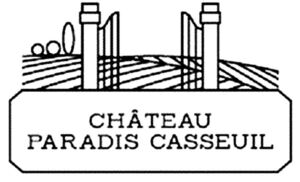

Trade Mark Journal No.2025/033 15 August 2025
WO0000001574555 (16,20,33)
Office of origin: France
Date of International Registration:9 December 2020
Date of designation in the UK:
9 December 2020

International priority date claimed: 9 June 2020
(France)
(4655271)
- Class 16
- Paper; cardboard; cardboard articles, cardboard coasters; signboards of paper or cardboard; printing products (printed matter); labels of paper or cardboard; packing paper; boxes of cardboard or paper; packaging of cardboard or paper for bottles; small bags [envelopes, pouches] of paper or plastics for packaging; plastic foils for packaging; books; magazines [periodicals]; newspapers; stamping pads; engravings.
- Class 20
- Bottle racks; casks of wood for decanting wine; bottle stoppers; barrel taps not of metal; non-metallic containers for transport and storage purposes; packaging containers of plastic materials; chests not of metal; bottle caps not of metal; bottle closures not of metal; crates and pallets of wood or plastic materials; cases of wood for bottles; showcases; wine racks [furniture]; works of art made of wood; fronts of cases made of wood (stamps); goods (not included in other classes) made of wood, cork, reed, cane, wicker, horn, bone, ivory, whalebone, shell, amber, mother-of-pearl, meerschaum, meerschaum and substitutes for all these materials, or of plastics, namely stakes for plants, indicators of plant names made of wood or plastic, trays not of metal, sculptures and figurines (statuettes) of wood or plastic, decorative wall plaques not of textile (furniture), trophies of wood, barrels and casks not of metal, crates not of metal, chests of wood, packaging and casings of wood for bottles, cases of wood for bottles, vats of wood (excluding bathtubs).
- Class 33
- Wine complying with the specifications of the Protected Designation of Origin (PDO) Bordeauxand complying with the specifications of the Traditional Terms for Wine (TTW) Chateau.
CHATEAU PARADIS CASSEUIL
Representative: Brandsmiths SL Limited, Old Pump House, 19 Hooper Street London E1 8BU UNITED KINGDOM